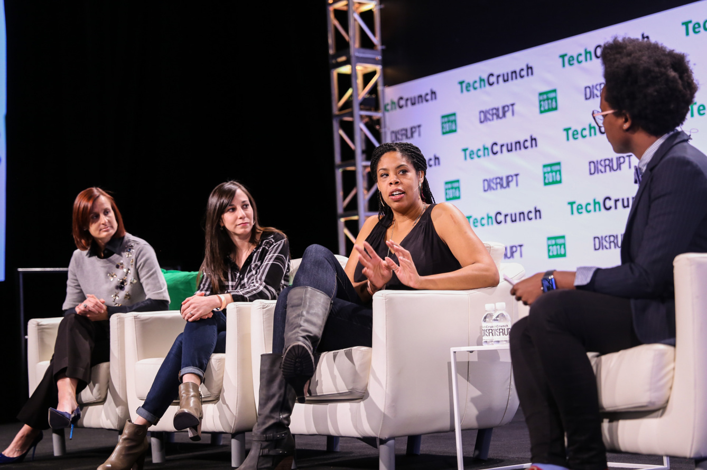

The tech industry's diversity problems are exacerbated by its obsession with
genius coders and brilliant founders, Carissa Romero, a partner at the
diversity consulting startup Paradigm, said today at TechCrunch Disrupt
NY. Romero, who took part in a panel of diversity advocates, said that
the mentality that geniuses are born rather than created through experience
and practice can be alienating for people who don't fit the stereotype
of the average tech worker: young, white, straight male, probably rocking
a hoodie. Diversity - or the lack of it - became a major focus in tech
several years ago when companies like Google and Facebook followed Pinterest's
lead and released hard data about the gender and racial makeup of their
workforces. The numbers confirmed the well-worn stereotype that tech
companies are mostly staffed by white men, and kicked off conversations
about how to level the playing field. But now, those conversations have
started to shift. With hard data out on the table, companies have started
to diversify their new hires and are beginning to focus on building inclusive
cultures so they can retain staff. Erica Baker, an engineer and diversity
advocate at Slack, and Danielle Brown, head of diversity and inclusion
at Intel, joined Romero in that conversation today at TechCrunch Disrupt
NY.
Source